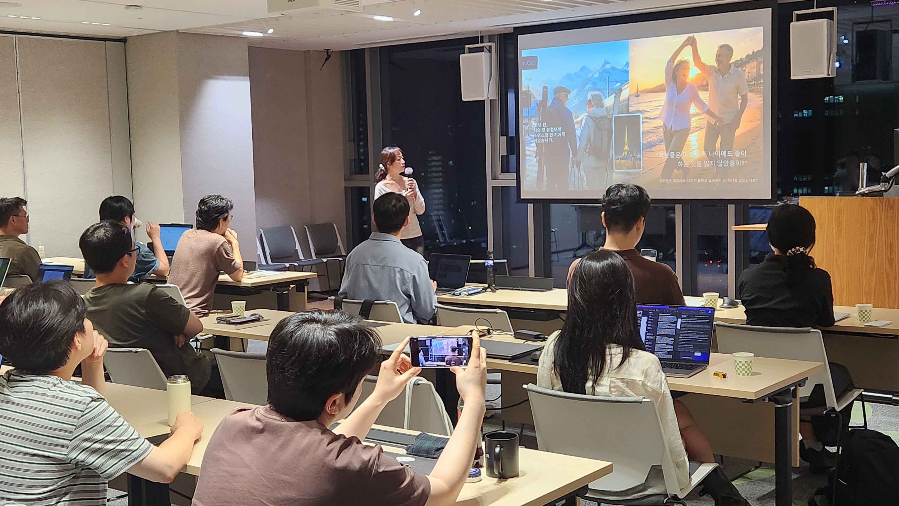

BELLAI ARCHIVE
Beyond the Canvas
작업과 경험을 지나며 발견한
생각과 이야기를 기록합니다.
책과 문화, 여행과 전시,
미술수업과 사람들 곁에서 오래 마음에 남은 것을 담습니다.
THOUGHTS BEYOND THE WORK
경험을 통해 발견하고 생각한 것
작품과 활동의 결과보다, 그 과정에서 만난 장면과 마음을 한 편씩 쌓아갑니다.


PEOPLE · CONNECTION · STORIES
People
What We Find in Each Other
수업에서, 강연에서, 함께 만드는 자리에서.
사람을 만나며 발견한 이야기를 기록합니다.